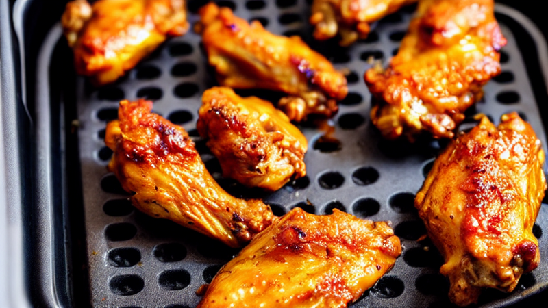
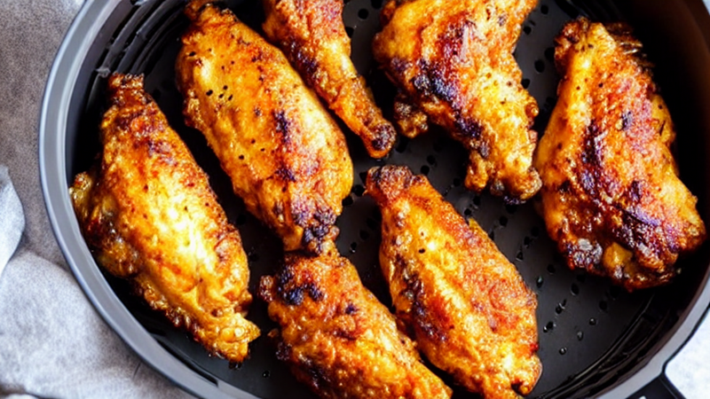
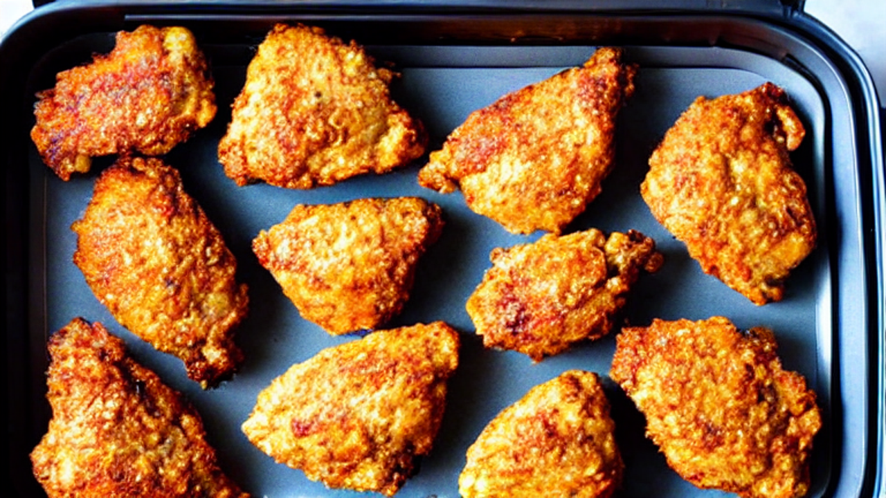
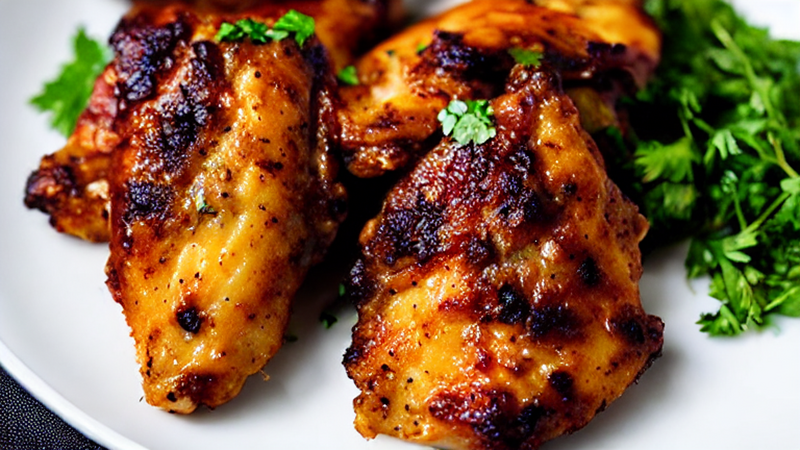
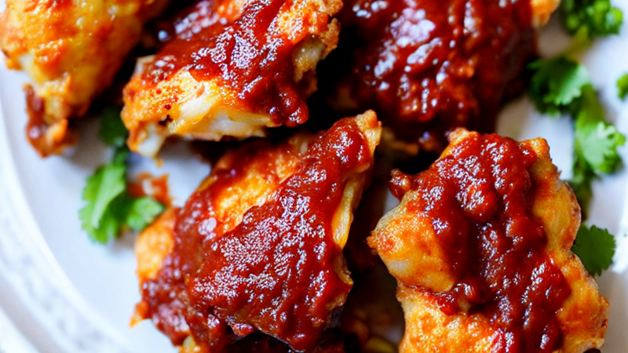

Crispy Air Fryer Garlic Parmesan Wings | 15-Minute Dinner Hack
Achieve restaurant-quality crispy wings at home with this air fryer garlic parmesan recipe! Perfectly seasoned, golden-baked, and packed with cheesy flavor. Ideal for game days or weeknight dinners. #AirFryerRecipes
Ingredients
- 1.5 lbs chicken wings
- garlic powder
- parmesan cheese
- paprika
- salt
- pepper
- All ingredients are pantry staples!
Instructions

This crispy air fryer garlic parmesan wings recipe is so good, you'll never order takeout again! Let's make restaurant-level wings in minutes.
You'll need 1.5 lbs chicken wings, garlic powder, parmesan cheese, paprika, salt, and pepper. All ingredients are pantry staples!
Toss wings in garlic parmesan seasoning mix until fully coated. Make sure every bite gets that cheesy crust!

Set air fryer to 400°F. Cook in single layer for 18-20 minutes, flipping halfway. Watch those wings get golden!

Spray a light coat of oil for that extra crispy texture. No deep frying needed! Just pure air fryer magic.

When done, sprinkle extra parmesan and fresh parsley. The aroma alone will make your kitchen smell amazing!
Serve with your favorite dipping sauce and enjoy the crunch! These wings are so addictive, you'll finish the whole batch.

Subscribe for more air fryer hacks and easy weeknight meals! Let me know your favorite wing seasoning in the comments.
Recommended Kitchen Essentials
Every great recipe starts with great tools. Here are our top picks to make cooking easier and more enjoyable:
Support Quick Bites Kitchen — When you purchase through our links, we may earn a small commission at no extra cost to you. This helps us keep creating free recipes for everyone. Thank you!